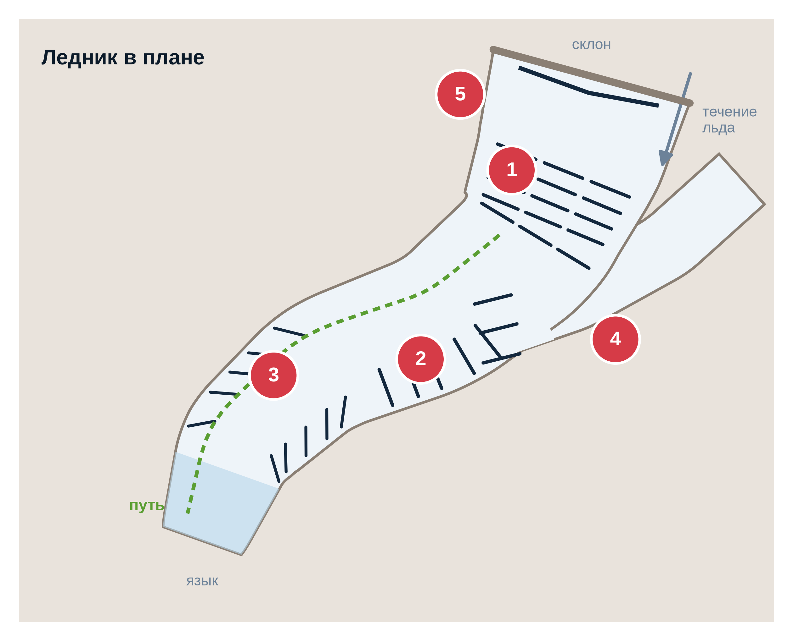

Модуль 2 · Горная среда и её опасности
2.2. Ледники
Черновик для замечаний к тексту и к рисункам. Курс не опубликован и не даёт допуска. Рисунков в уроке: 2, они стоят под текстом.
Как устроен ледник
Ледник рождается там, где за год выпадает больше снега, чем успевает растаять. На Кавказе это высоты примерно от 3000 до 3500 м: на западе ниже, на востоке выше. Снег копится, уплотняется и превращается в лёд. Лёд под своим весом медленно стекает вниз по долине и принимает её форму. Скорость зависит от размера и уклона. Небольшие каровые ледники смещаются на несколько метров в год, крупные долинные ледники Кавказа — на десятки метров, а в ледопадах лёд движется ещё быстрее, до сотен метров в год.
Сверху ледник питается снегом, внизу тает, а камни, которые он несёт и откалывает, складываются в морены. Ледник живой: каждый год появляются новые трещины и исчезают старые, и описание прошлого сезона может уже не совпадать с тем, что видно на месте. Наверху лежит область питания, где снег накапливается. Слежавшийся зернистый снег, который уже не снег, но ещё не лёд, называют фирном. Летом на леднике видна снеговая линия, граница между заснеженной верхней частью и открытой нижней. Гляциологи различают климатическую снеговую линию, среднюю многолетнюю высоту, выше которой снег не успевает стаять, и сезонную границу снега на конкретном леднике, которая к концу лета поднимается.
Инструктору важна вторая: она показывает, где кончается голый лёд с видимыми трещинами и начинается снег, который их прячет. Ниже этой границы — открытый ледник, выше — закрытый, полностью покрытый снегом. Один и тот же ледник бывает одновременно и открытым, и закрытым, а граница за лето поднимается. Нижняя часть, сползающая по долине, — язык ледника. Камни, которые ледник несёт и откладывает, — морены: боковые вдоль краёв, срединные там, где сливаются два ледника, конечные у языка и донные под льдом. По морене часто идёт тропа, но камни на ней лежат неустойчиво.
Долинные ледники текут по долинам. Каровые лежат в чашах-карах и языка не имеют. Висячие держатся на крутых склонах и опасны обвалами льда. Нунатак — отдельная скала, обтекаемая ледником, скальный пик, со всех сторон окружённый льдом. «Бараньи лбы» — округлые скальные выступы, которые ледник отполировал и оставил после отступления, лазать по ним почти не за что. Ранклюфт, его пишут и «рантклюфт», — щель, которая вытаивает между тёплой скалой и снегом или льдом: тёплая скала растапливает снег рядом с собой. На выходе со снега на скалы это обычная ловушка.
Трещины, мосты и сераки
Трещины появляются там, где лёд растягивается, и разбросаны они не случайно. Поперечные рождаются на перегибах ложа, где уклон растёт, и бывают глубиной 30–40 м, часто сериями, одна за другой. Продольные появляются там, где середина ледника течёт быстрее краёв, которые цепляются за скалы. На повороте внешний край растягивается сильнее, там трещин больше, внутренний сжат, и путь обычно прокладывают ближе к нему. У скальных бортов край цепляется за скалу, середина уходит вперёд, и вдоль бортов образуются краевые трещины, косые к направлению движения. Выход с ледника на морену или на скалы из-за этого опасен.
Слияние двух ледников и места, где из-под льда выступает скала, тоже рвут лёд. Ниже ледопада, где лёд снова выполаживается, и у подножия крутых склонов трещины ждут отдельно. Ровная середина пологого участка и вогнутые, сжатые участки обычно спокойнее. Бергшрунд, подгорная трещина, — глубокая трещина у верхнего края ледника, там, где движущийся лёд отрывается от крутого склона. Его приходится пересекать почти на каждом восхождении. В банке аттестации его описывают как глубокую трещину между ледником и скалой у его начала, этот ответ и засчитывают.
С ранклюфтом его не смешивают: ранклюфт вытаивает на границе ледника и скал, бергшрунд — отрыв движущегося льда у начала крутого склона. Когда поднимаются по снежному склону к выходу скал, наибольшая опасность — провалиться в бергшрунд или ранклюфт. Этот участок идут в связке и проверяют снег перед собой. Ледопад — участок ледника с крутым перепадом, где лёд трескается и образует трещины и сераки. Серак — ледяная башня, бывает выше десяти метров. Сераки падают в любое время суток, независимо от погоды, потому что ледник движется всегда.
Под ними не останавливаются, не отдыхают и не ставят лагерь. Если обойти участок нельзя, заранее смотрят вероятную линию падения и выката, намечают укрытие и проходят опасную зону максимально быстро и без остановок. Для самопроверки: сераки, бергшрунды и трещины — ледовый рельеф, а жандарм и эрозионные долины, промытые водой, к ледовому рельефу не относятся. Через трещины часто перекинуты снежные мосты, остатки снега или лавинные выносы. Утром, после ночного мороза, мост держит лучше, днём раскисает и слабеет. Ледник поэтому проходят рано, а сомнительный мост — только со страховкой.
Мост, скорее всего, держит, если сейчас утро после мороза, мост толстый и широкий, видны края трещины, по которым можно оценить толщину, а щуп не проваливается. Сомнительно, если мост тонкий и провисший, солнце уже греет ледник, а края не видны и толщину не оценить. Первым делом ищут обход по краю трещины, даже если он длиннее. Если обхода нет и мост выглядит надёжно, его проходят по одному, перпендикулярно трещине, без прыжков, на натянутой верёвке, а напарник страхует с надёжной точки. Если мост раскис днём, возвращаются и проходят утром.
Как идти через зону трещин
Закрытую трещину не видно, но снег часто её выдаёт. Ложбинка или едва заметный провал поперёк направления движения ледника — снег просел над пустотой. Полоса другого цвета или фактуры, матовая на блестящем снегу, сероватая на белом, особенно заметна при низком солнце утром и вечером. Снег просел в следе того, кто идёт впереди. Открытая трещина сбоку от пути почти наверняка продолжается под снегом поперёк пути: трещины идут семействами. Дырка в снегу, через которую видна темнота, бугор и сразу за ним понижение, снежный надув над краем, старые следы, которые без видимой причины обходят место, щуп или древко ледоруба, провалившиеся в пустоту, — всё это признаки.
Самая коварная ситуация — ровный свежий снег в плохую видимость: признаков нет совсем. Тогда опираются на карту, на то, где трещины должны быть по рельефу, и на движение в связке. Путь прокладывают поперёк трещин, а не вдоль. Если идти вдоль, вся связка может оказаться над одной трещиной, и провалятся двое сразу. Поворот проходят ближе к внутренней, сжатой стороне. Чужому следу не доверяют вслепую: вчерашний мост сегодня мог раскиснуть, а след мог пройти по нему с большим риском, чем кажется.
В связке верёвка всё время натянута, первый проверяет подозрительный снег щупом или древком ледоруба, а связки идут не точно след в след друг другу, чтобы одна трещина не захватила двоих. Остановки делают вне зоны трещин, на гребне морены или на заведомо сплошном участке, и никто не отвязывается «на минуту» сфотографироваться. Инструктор держит в поле зрения каждую связку. Прокладка пути по карте и снимку заранее отмечает, где группа идёт в связках, а где можно обойти.
Морена, озёра и отступающий лёд
Язык многих ледников Кавказа, Алтая и Памира покрыт мореной, и лёд под ней не виден. Такой ледник называют покрытым мореной, а в обиходе — чёрным. Сверху хаос камней, а под ними, иногда в нескольких сантиметрах, лёд. Вал боковой или конечной морены часто тоже хранит внутри лёд, это морена с ледяным ядром: её склоны медленно сползают, камни на них лежат на грани. Там, где лёд под камнями тает, образуются воронки и провалы, это термокарст. В стенках воронок виден голый лёд, присыпанный камнями, и на нём очень скользко.
На открытом льду встречаются ледниковые колодцы, вертикальные промоины, куда уходит талая вода, а внутри ледника — полости и каналы с водой, которые иногда прорываются. Идут по гребням морен и по вершинам бугров, обходя воронки сверху, в касках, с дистанцией, чтобы сдвинутый камень не попал в соседа, и со свободными руками: палки часто мешают. Не останавливаются под стенками воронок и под крутыми склонами морен. Камни лежат на льду и едут под ногой вместе с соседними, стенки термокарста осыпаются, берег у ледникового озера часто подмыт и обрушается. Лагерь не ставят на морене с ледяным ядром, за ночь площадка уйдёт, у подножия моренного вала и на краю воронки или озера. Хорошее место — старая, заросшая травой терраса в стороне от русел.
Отступая, ледники оставляют озёра. Моренное озеро подпружено валом конечной морены, часто с ледяным ядром. Если вал размывается, тает или в озеро падает лёд или скальный обвал, вода прорывается и уходит вниз по долине вместе с камнями, так рождается селевой поток. Озёра на самом леднике, в воронках и у края льда, могут уйти внезапно, через внутриледниковые каналы. Признаки опасности: озеро заметно выросло по сравнению с прошлыми сезонами, вал размыт или в нём промоины, вода сочится сквозь тело морены, над озером висит ледник или нависают свежие обвальные стенки. В долине ниже такого озера лагерь не ставят в русле и на конусах выноса, особенно в жару и в ливень.
20 сентября 2002 года вечером в Кармадонском ущелье Северной Осетии с отрога горы Джимарайхох на ледник Колка обрушилась масса висячего льда. Ледник сорвался с ложа, и ледово-каменный поток со скоростью 150–200 км/ч прошёл почти 20 км по долине реки Геналдон. Погибли и пропали без вести 125 человек, в том числе съёмочная группа Сергея Бодрова-младшего. Колка и раньше двигалась рывками, такое событие было известно и в начале XX века, но столь стремительного сброса никто не ожидал. Ниже висячих и пульсирующих ледников, ледниковых озёр и в узких долинах под ними дно долины не считают безопасным только потому, что здесь всегда стоят. События редки и непредсказуемы по времени, поэтому снижают не вероятность, а время пребывания: не ночуют в зоне выноса и проходят её без остановок.
Перед поездкой узнают у местных служб, нет ли в районе ледников и озёр под наблюдением. Ледники тают вслед за потеплением климата. Ледник Безенги с конца XIX века отступил больше чем на полтора километра. За двадцать лет, с 2000 по 2020 год, ледники Большого Кавказа потеряли почти четверть площади, и таяние ускоряется. Трещины и бергшрунды открываются раньше и осложняют подходы.
Снежные маршруты превращаются в ледовые или вовсе стаивают. Камнепадов становится больше, на месте отступивших языков появляются моренные озёра. Старые описания из-за этого проверяют особенно внимательно. Это теория: навык движения по леднику осваивают очно, а текст не является допуском и не заменяет аттестацию.
Рисунки урока

